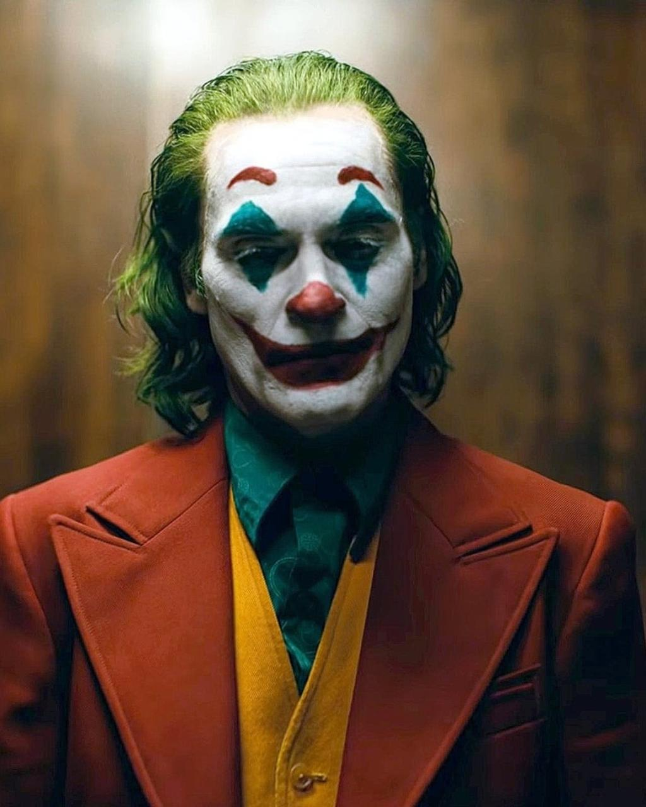
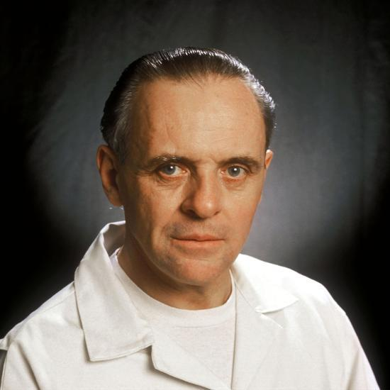
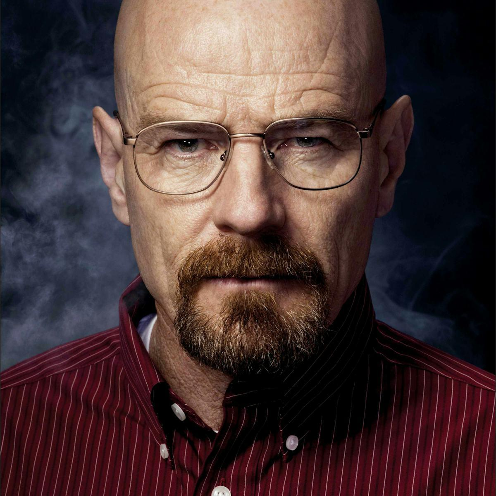
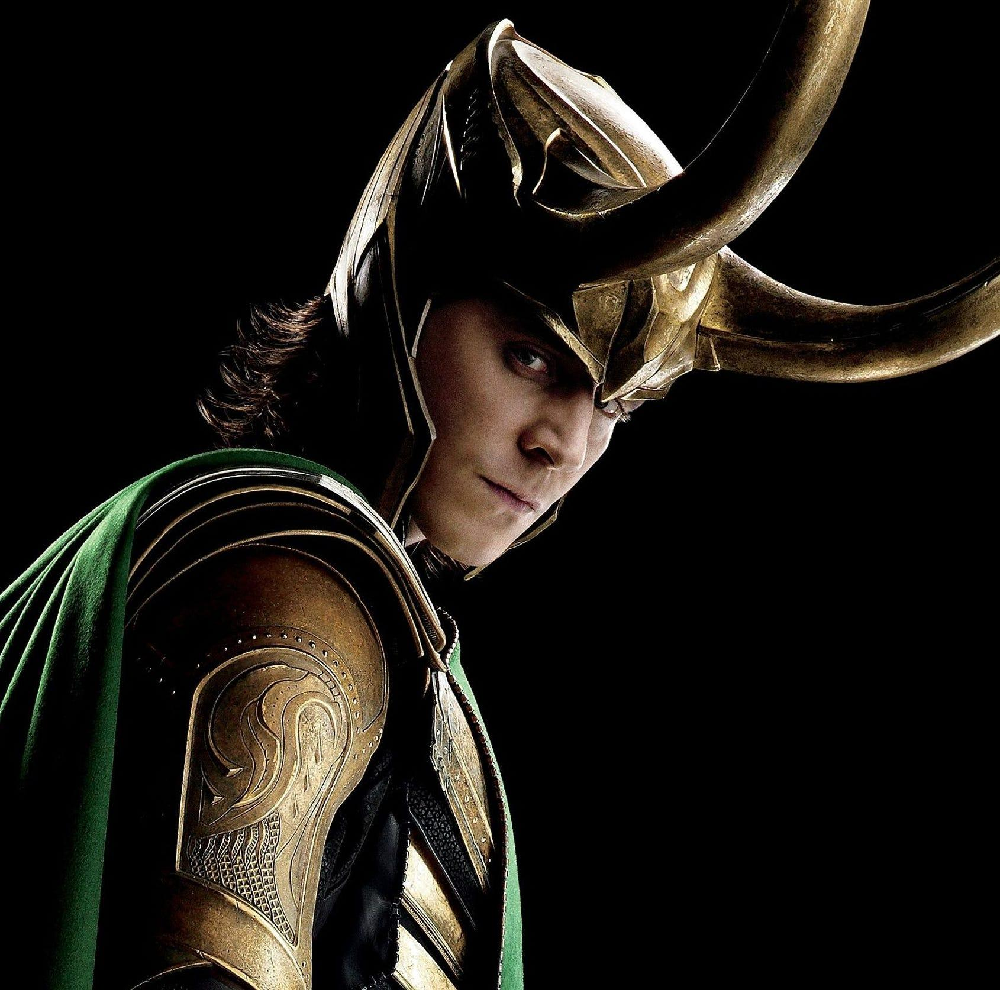

Hero
A central character whose goals and actions broadly support the moral values of the story. A hero can make mistakes, but their overall role is generally aligned with the story’s idea of what is right.
A multimedia documentary story · Media psychology
THE
Why do we empathize with those
we are supposed to hate?
When does the villain become the main character?
Imagine watching a series in which the central character lies, manipulates people, commits crimes, and gradually destroys other people’s lives. You understand that their actions are wrong. Yet you keep watching, worry about what will happen to them, and may even hope they succeed. Why do viewers sometimes support a character on screen whom they would condemn in real life?
Walter White, the chemistry teacher at the centre of Breaking Bad, is one example. At the beginning of the series, he is diagnosed with cancer and turns to producing methamphetamine, initially presenting the decision as a way to provide for his family. As the story develops, however, his choices become increasingly cruel, and the original explanation no longer accounts for the harm he causes. Sony Pictures traces his transformation from a family man into a major figure in the drug trade.
A different example is Arthur Fleck in Todd Phillips’ Joker (2019). The film introduces him as a socially isolated man who experiences humiliation and rejection. The audience sees the circumstances surrounding his transformation, but understanding those circumstances does not make his later violence acceptable. DC’s official film information presents Arthur’s story as a descent into a darker identity.
Why can a character who breaks moral rules provoke interest, sympathy, or even admiration? Is it charisma, a complicated past, perceived similarity, or the way a story is told? The answer is not simply that people like bad people. We can be curious about a villain, understand their motives, feel emotionally involved in their story, and still disapprove of their actions.
In a 2022 OnePoll survey of 2,011 US adults, commissioned by Butterfinger and reported by StudyFinds.
Read the survey report ↗EDITORIAL NOTE The survey is useful as an illustration of audience interest, not as proof of a universal preference. Its commercial sponsor and US-only sample matter.
Villain, antihero, and hero
In everyday conversation, “villain” and “antihero” are sometimes used as if they mean the same thing. In storytelling, however, they describe different narrative roles.
A central character whose goals and actions broadly support the moral values of the story. A hero can make mistakes, but their overall role is generally aligned with the story’s idea of what is right.
A central character who lacks some traditional heroic qualities. They may be cynical, selfish, violent, or willing to break the law, yet still become the audience’s main point of identification.
A character whose goals or actions oppose the moral order of the story and often cause serious harm. A story can place a villain at its centre and show events largely from their perspective.
Understanding a character, agreeing with their decisions, and accepting their behaviour are not necessarily the same thing.Based on Seipel (2021)
These categories are not always fixed. Walter White begins as a protagonist whose circumstances invite sympathy, but his later decisions increasingly conflict with the image of a caring father. Loki also moves from being Thor’s adversary to a more complicated character whose motives and relationships are explored across several Marvel stories. Neither should be treated as a straightforward traditional villain throughout the entire narrative. Melissa Seipel’s qualitative dissertation examines how viewers make sense of fictional antiheroes and negotiate their feelings towards them [8].
The psychology of a villain's appeal
There is no single explanation for why some viewers are drawn to villains while others prefer traditional heroes. Research points to several factors: individual personality traits, perceived similarity, moral curiosity, identification, and narrative context.
The Dark Triad is a group of three personality traits: narcissism, Machiavellianism, and psychopathy. These are dimensions studied in personality psychology, not labels that can be assigned to someone simply because they enjoy a fictional character.
Kjeldgaard-Christiansen and colleagues studied 1,805 participants in a North American sample. Higher scores on the three traits were associated with more positive engagement with fictional villains, including sympathy, identification, fascination, and enjoyment [6].
That does not mean everyone who likes the Joker or Darth Vader has these traits. The study identifies statistical associations within a particular sample; it does not diagnose individual viewers or establish that personality alone causes admiration.
Greenwood, Ribieras, and Clifton examined 162 participants and found that aggression, Machiavellianism, and psychopathy were among the strongest predictors of affinity for antihero characters and genres. They also reported that perceived villainy and violence were negatively related to some forms of identification and parasocial interaction [4]. This is an important qualification: a character’s appeal is not simply stronger because the character is more immoral.
Across three studies, Black and colleagues explored how liking dark fictional characters related to Machiavellianism, moral concerns, and imaginative resistance: reluctance to engage imaginatively with fiction that violates one’s moral beliefs. Their findings link dark-character liking with individual differences, but do not reduce it to one personality explanation [1].
Explore the research ↗Rebecca Krause and Derek Rucker explored whether people can be attracted to fictional villains who resemble them. Their research included a large proprietary dataset from a company with more than 232,000 registered users, followed by five laboratory experiments involving 1,685 participants. Fiction may create a safer context for considering uncomfortable similarities because the character is not a real person in the viewer’s life [7].
Across five experiments involving 2,429 participants, Wylie and Gantman examined interest in immoral and morally ambiguous people. Participants were often interested in explanations for their behaviour. Curiosity, however, is not the same as admiration: a villain can become a psychological puzzle without becoming a role model [15].
Identification generally refers to a process in which viewers temporarily adopt a character’s perspective and experience events through that character’s goals and situation. It is not identical to liking a character or feeling attached to them.
Janicke and Raney studied 234 participants who watched one of three feature films about antiheroes. Their findings linked situational moral disengagement with character identification and liking, which helped predict enjoyment of the viewing experience [5].
A 2025 study of 473 participants also examined admiration for and perceived similarity to 25 fictional heroes, antiheroes, and villains [3]. Audience responses differ across individuals and character types; there is no universal explanation for why every viewer likes a particular villain.
These studies describe associations and patterns in particular samples. They do not prove that liking fictional villains makes someone immoral, violent, or likely to commit crimes.
What do viewers and experts say?
Experimental studies can identify patterns, but they do not always capture how viewers explain their own emotional responses. Published expert interviews and qualitative research add context to those patterns.
In a published Forbes interview, Greenwood discusses viewers’ responses to antiheroes and the role of individual differences. Her comments underline the need to distinguish statistical relationships from proven cause and effect.
Read the Forbes interview ↗Grizzard discusses how a character’s motives and the surrounding story can influence audience judgment. Background information and narrative perspective can shape sympathy without making harmful actions acceptable.
Read the university interview ↗The Open University course features psychologists Zoë Walkington and Graham Pike discussing how people form relationships with fictional villains. This is an educational resource and expert discussion, not an original interview conducted for this project.
Explore the OpenLearn course ↗TRANSPARENCY These are published expert materials. No direct interviews were conducted for this project.
Six characters, six different routes to audience sympathy
Psychological research describes general patterns. Fictional characters show how those patterns can work in different narrative situations. These examples are interpretations of the stories, not claims that the cited studies directly tested each character.

01 / BACKSTORYIn Joker (2019), the audience sees Arthur trying to work, dreaming of becoming a comedian, caring for his mother, and searching for a place in society. The film gives viewers sustained access to his experiences and frames the story largely through his perspective. This can create emotional empathy, even if viewers reject the violence that follows.
Understanding his background does not excuse his actions. The film is not a clinical study, and its plot cannot be used as evidence that mental illness leads to crime.

02 / COMPETENCEHannibal is intelligent, educated, controlled, and skilled at reading other people. His danger is combined with competence: viewers may be interested in how he thinks, how he manipulates conversations, and what he will do next.
This is an interpretation of the character, not a finding from a study specifically about Hannibal. A viewer may admire a character’s intelligence as a fictional construction while remaining repelled by their crimes.

03 / MORAL DECLINEAt the beginning of Breaking Bad, Walter’s diagnosis and stated concern for his family provide an understandable starting point. As the series progresses, however, his decisions increasingly serve his desire for power, control, and recognition. The audience is forced to reconsider the difference between what Walter says motivates him and what his choices reveal.
The central question changes from “Why is he doing this?” to “When did this stop being about his family?”
Vader was once Anakin Skywalker, a Jedi who turned to the dark side. His story gives the audience knowledge of his past, relationships, and earlier hopes. The possibility of redemption adds another emotional layer: his final choices suggest that change remains possible, even after terrible harm has been done.
Redemption does not erase the consequences of his actions. His final decision changes the meaning of his story; it does not make the past harmless. Official character profile [9].
Thanos believes he is acting for a greater purpose. He argues that eliminating half of all life will restore balance to the universe. His reasoning gives his violence an ideological framework: he does not see himself as acting randomly, but as carrying out a necessary plan.
A coherent explanation is not the same as a moral justification. The audience can understand the logic Thanos uses while recognising that his plan is catastrophic and imposed on others without their consent.

06 / TRANSFORMATIONLoki’s role changes across the Marvel Cinematic Universe. In early films, he is Thor’s adversary and seeks power. Later stories reveal more about his family relationships and internal conflicts, making his character more complicated. The audience becomes interested not only in what Loki does, but in whether he is capable of changing.
Viewers do not have to forget his earlier actions to recognise later changes.
A little self-discovery
Are you more like a mastermind, a rebel, or a fallen hero? Take these two short quizzes and explore your connection with fictional villains.
CHARACTER MATCH
Discover which of the six fictional characters from this story most closely matches your choices and attitudes.
YOUR RESULT
YOUR VIEW OF VILLAINS
Explore what draws your attention to morally complex characters: their emotions, intelligence, rebellion, mystery, or possibility of change.
YOUR RESULT
IMPORTANT! These quizzes are designed for entertainment and reflection, they are not scientifically validated personality assessments and do not diagnose psychological traits.
Why is a fictional villain different from a real criminal?
If someone enjoys watching Hannibal Lecter, does that mean they would want to meet a person like him in real life? Not necessarily. Fiction creates a distance between the audience and the events on screen. Viewers can pause a film, stop an episode, or leave a story. They know that the character is part of a constructed narrative and that the events will not directly affect their safety.
Stories also control information. Screenwriters decide which events to show, whose perspective to foreground, and when to reveal a character’s motives or past. If viewers see only a character’s cruelty, emotional identification may be difficult. If the story first reveals the character’s fears, relationships, or experiences, the audience may interpret later actions in a more complex way.
The Open University course discusses the one-sided emotional connections viewers can form with fictional figures, commonly described as parasocial relationships [12]. However, liking a fictional villain does not automatically change a viewer’s real-life behaviour. Enjoying a story about a criminal is not the same as endorsing crime.
So, why do we empathize with villains?
There is no single answer to why viewers sometimes choose villains over heroes. Some are drawn to a character’s intelligence or competence. Others recognise familiar emotions or traits in a darker fictional figure. Some want to understand motives that seem contradictory, while others become emotionally involved because the story allows them to experience events from the character’s point of view.
Research suggests that personality characteristics can be associated with preferences for morally questionable characters. It also shows that moral curiosity and identification can contribute to engagement with stories about antiheroes and villains. But these findings do not mean that all fans of villains share the same personality or values. Nor do they prove that sympathy for a fictional character is equivalent to moral approval.
We can feel for Arthur Fleck without justifying the Joker’s violence. We can recognise Hannibal Lecter’s intelligence without accepting his crimes. We can understand Walter White’s initial motives while condemning the person he becomes.
Perhaps we do not choose villains because we want to become like them. Sometimes we want to understand how a person crossed a moral boundary, how they explain that decision to themselves, and why their story holds our attention.
To understand a villain is not necessarily to take their side. It may simply mean looking beyond the label and examining the person the story has placed behind it.
This project is based on a secondary analysis of published research and media materials
This project is not a representative survey of audiences in Kazakhstan. The cited studies use different samples and methods, so their findings are not directly interchangeable
Research, reporting & further reading